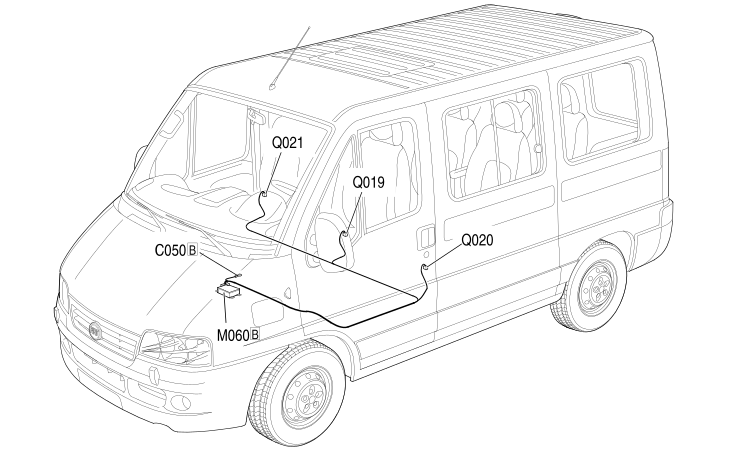

61 PRETENSIONERS
- Path
- Electrical equipment > 2 WIRING > 61 PRETENSIONERS
- Kind
- wiring harness
- Applies to
- all engines; all production periods; only with equipment: Centre passenger seat pretensioner
- Interactive page
- https://sloeber94.github.io/elrnDB-fDct/en/#/244002286
Applies to: all engines; all production periods; only with equipment: Centre passenger seat pretensioner

Topics that link to this page (15)
- C050A AIR BAG SYSTEM EARTH (PRETENSIONERS)
- C050B AIR BAG SYSTEM EARTH (PRETENSIONERS)
- C050B AIR BAG SYSTEM EARTH (PRETENSIONERS)
- C050B AIR BAG SYSTEM EARTH (PRETENSIONERS)
- K066 SENSOR FOR DRIVER'S SIDE BAG (PRETENSIONERS)
- K067 SENSOR FOR PASSENGER SIDE BAG (PRETENSIONERS)
- M060A AIR BAG CONTROL UNIT (PRETENSIONERS)
- M060B AIR BAG CONTROL UNIT (PRETENSIONERS)
- M060B AIR BAG CONTROL UNIT (PRETENSIONERS)
- M060B AIR BAG CONTROL UNIT (PRETENSIONERS)
- Q019 CENTRE FRONT SEAT BELT PRETENSIONER (PRETENSIONERS)
- Q020 DRIVER'S SEAT BELT PRETENSIONER (PRETENSIONERS)
- Q021 FRONT PASSENGER SEAT BELT PRETENSIONER (PRETENSIONERS)
- Q030 DRIVER'S SIDE BAG (PRETENSIONERS)
- Q031 PASSENGER SIDE BAG (PRETENSIONERS)